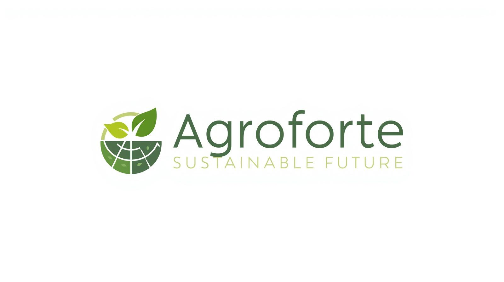

Calculadora de Carbono
Descubra uma estimativa de emissão de carbono da fazenda.

Leonardo Rodrigues nº19
Colégio de Aplicação Pedagógica - Universidade Estadual de Maringá.
Descubra uma estimativa de emissão de carbono da fazenda.
O que é:
O MIP é um modelo estratégico e multifacetado de tomada de decisão
voltado ao controle de pragas agrícolas (insetos, ácaros, doenças e plantas daninhas).
Em vez de simplesmente aplicar defensivos de forma reativa ao primeiro sinal de é um modelo estratégico e multifacetado de tomada de decisão voltado ao controle de pragas agrícolas (insetos, ácaros, doenças e plantas daninhas).
Em vez de simplesmente aplicar defensivos de forma reativa ao primeiro sinal de ameaça, o MIP analisa o ecossistema da lavoura como um todo. Ele integra pilares como o controle biológico, cultural, comportamental, genético, varietal e químico.
O objetivo é diminuir prejuízos e reduzir impactos ambientais.
O que é:
O Plano ABC (atualmente chamado de Plano ABC+) é uma política pública do governo brasileiro que planeja e organiza as ações para a adoção de tecnologias de produção sustentáveis no campo.
É uma das principais iniciativas voltadas à sustentabilidade climática no agronegócio.
Para que serve:
Serve para incentivar e financiar práticas agrícolas que reduzam a emissão de gases de efeito estufa (GEE) e aumentem a fixação de carbono no solo. Ele financia técnicas como o Sistema Plantio Direto, a Integração Lavoura-Pecuária-Floresta (ILPF) e a recuperação de pastagens degradadas.
Ele financia técnicas como o Sistema Plantio Direto, a Integração Lavoura-Pecuária-Floresta (ILPF) e a recuperação de pastagens degradadas.
Essas técnicas ajudam o produtor e o meio ambiente ao mesmo tempo.
O que é:
A bioenergia é a energia obtida por meio da biomassa, que é toda matéria orgânica renovável de origem vegetal ou animal.
xemplos comuns de matéria-prima incluem o bagaço da cana-de-açúcar, resíduos de madeira, cascas de grãos e dejetos de animais.
Para que serve:
Serve para substituir o uso de combustíveis fósseis poluentes.
Ela é usada na produção de biocombustíveis (como etanol e biodiesel), na geração de eletricidade (através da queima de biomassa em termoelétricas) e na produção de calor industrial ou residencial.
A bioenergia reduz a poluição e ajuda no aproveitamento de resíduos agrícolas.